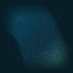
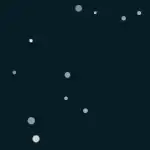
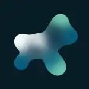
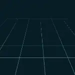
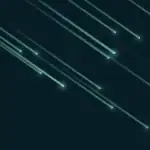

Open Animations 4WP
Animated backgrounds and text effects for WordPress and Elementor.
What it does
Animated backgrounds and text effects for WordPress and Elementor. Every colour, speed and shape is a control in the panel, and colours follow your site's palette unless you pick others. No coding needed.
Early build, version 0.8.0. 90 effects so far, each with a starter preset: 39 animated backgrounds and 51 effects for existing widgets and blocks. More are planned.
A few of the effects





Real previews of the effects, 150 by 150 pixels.
What is in it
39 animated backgrounds
Including particles, starfield, snow, bubbles, embers, fireworks, shader gradients, waves and grids. They sit behind a container's content.
Text effects
Text reveal, gradient and shimmer text, glitch, outline draw, typewriter, scramble, word rotate and more.
Motion for anything
Entrance animations (20 styles, on scroll or page load) and attention moves such as pulse, tada and heartbeat.
Boxes and buttons
Border beam, glow border, shimmer and hover-fill buttons, glass panels, tilt and spotlight cards, magnetic pull.
UI widgets
Carousel, card swap, morph slider, menu highlight, dock, nav card, option wheel, stepper and folder.
Presets
Save a look and reuse it anywhere. Linked elements follow the preset. Export and import presets between sites.
How you use it
- Elementor: pick an effect under Style, Animated background, on a container. Or Advanced, Open Animations, on any widget. Or drop in the Animated Effect widget.
- Block editor: an Animated Effect block, an Animated background option on Group, Cover and Columns, and text reveal on any block.
- Anywhere shortcodes work: a short code with the effect name and a height. Any setting in the panel works as an attribute.
Every setting changes the effect live in the editor. On phones you can keep it animated (automatically lighter), show a still image, or hide it.
Fast and kind to visitors
Light by default
An effect's code only downloads on pages that use it. Effects pause when scrolled out of view or when the tab is hidden, and share one animation loop.
Reduced motion
Visitors who ask their device for less motion see one still frame. Text effects leave the text untouched.
Safe fallbacks
If a browser cannot run an effect, or a page has more than eight heavy effects at once, a still colour gradient shows instead.
Works with caching
Built to work with LiteSpeed Cache without special settings.
Who it is for
People who build WordPress sites with Elementor or the block editor and want polished motion without writing code.
Needs: WordPress 6.5 or newer and PHP 8.1 or newer. Elementor is optional. There is no settings page to fill in.
Licence: GPL-2.0-or-later. Third-party credits, including Paper Shaders (Apache-2.0) for the shader backgrounds, are listed in the plugin's third-party notices.
How to get it
This one is on request. The code is private for now, so there is no public download.
Tell me what you would use it for, and I will tell you what is possible.